首页 / 图片来源
图片来源与许可CREDITS
站内所有人物影像与地标照片均来自 Wikimedia Commons，属于公有领域或知识共享（CC）授权作品。下表保留原始文件名、作者与许可协议，点击可回到 Commons 页面核对。
使用原则：只选用公有领域（Public domain）或 CC BY / CC BY-SA 等允许再利用的图片；不改变人物影像的真实性，仅做统一的红色调处理与裁切以适配版式；作者与许可在图片角落与下表同时标注。
若你是权利人并认为某张图的使用不妥，请通过站主告知，我们会在核实后立即替换或删除。
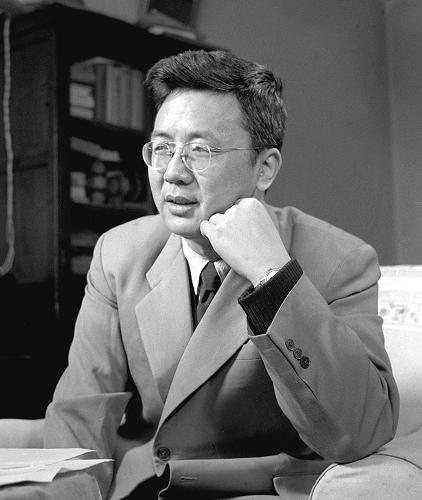
Public domain
Public domain
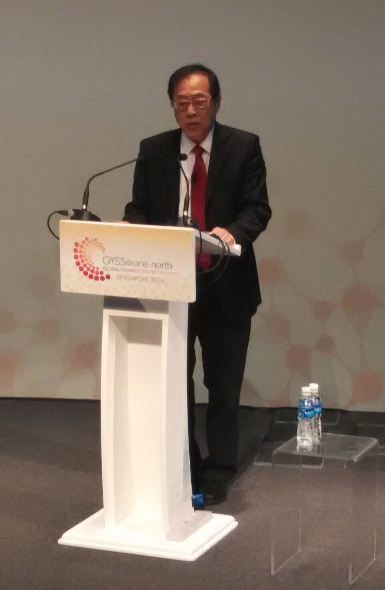
CC BY-SA 4.0
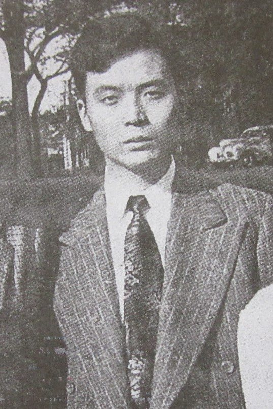
Public domain
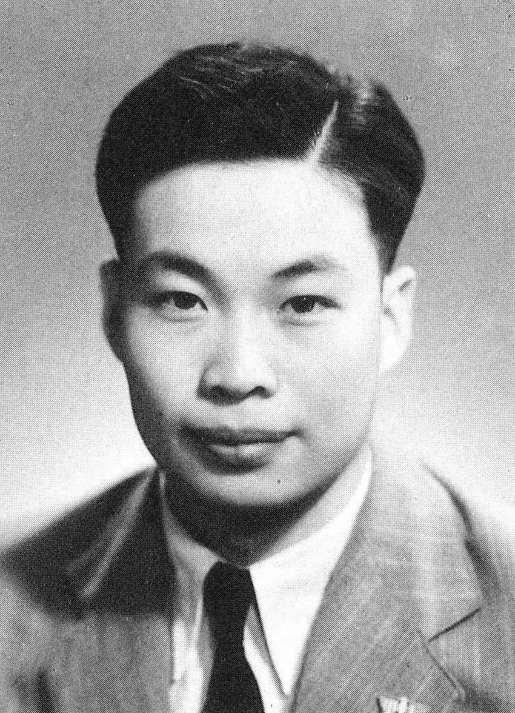
Public domain
Public domain
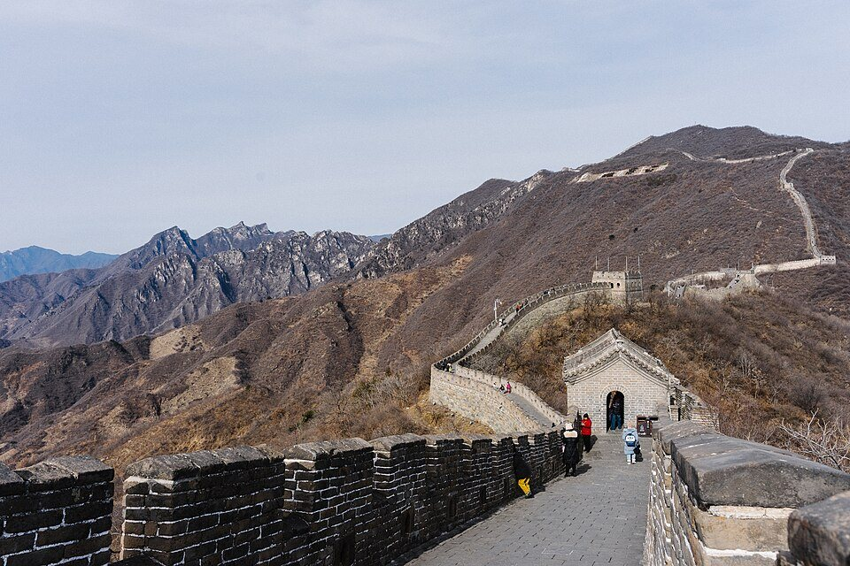
CC BY-SA 4.0
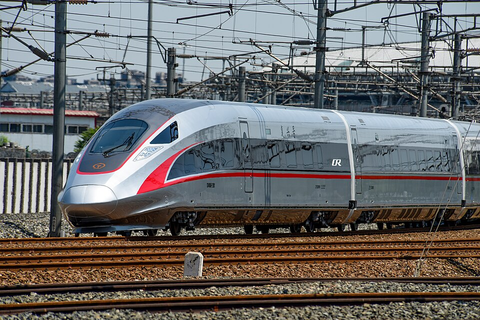
CC BY-SA 4.0
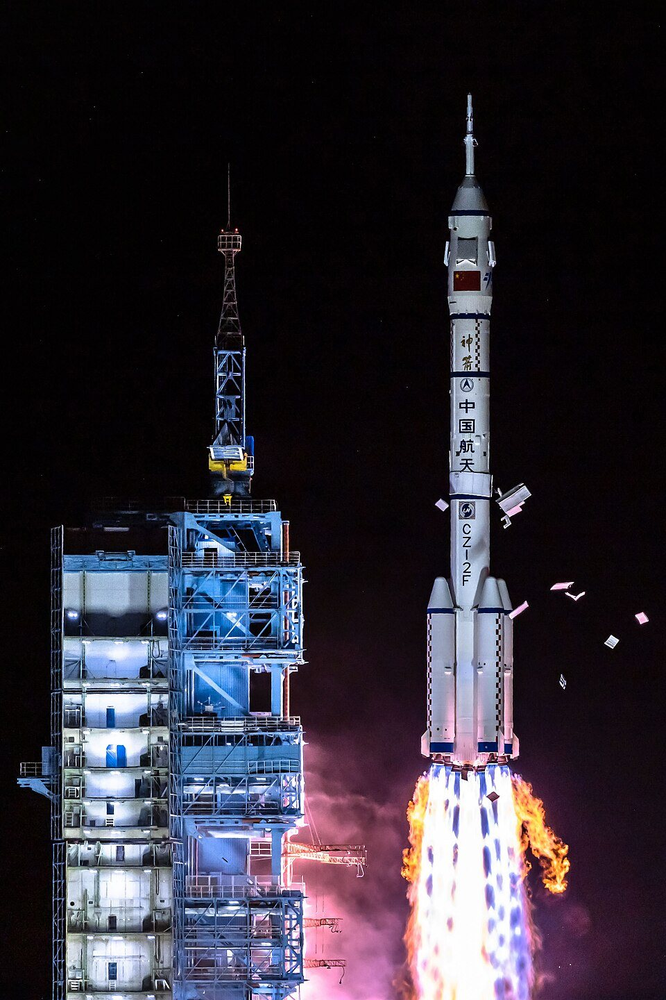
CC BY-SA 4.0
Public domain
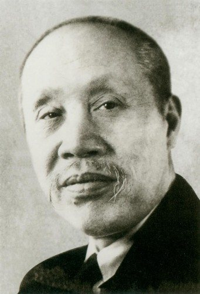
Public domain
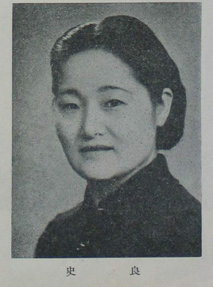
Public domain
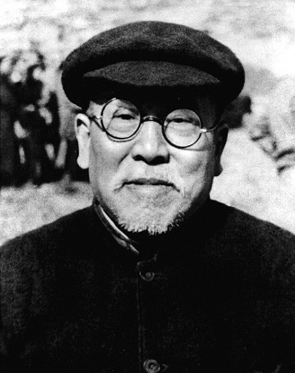
Public domain
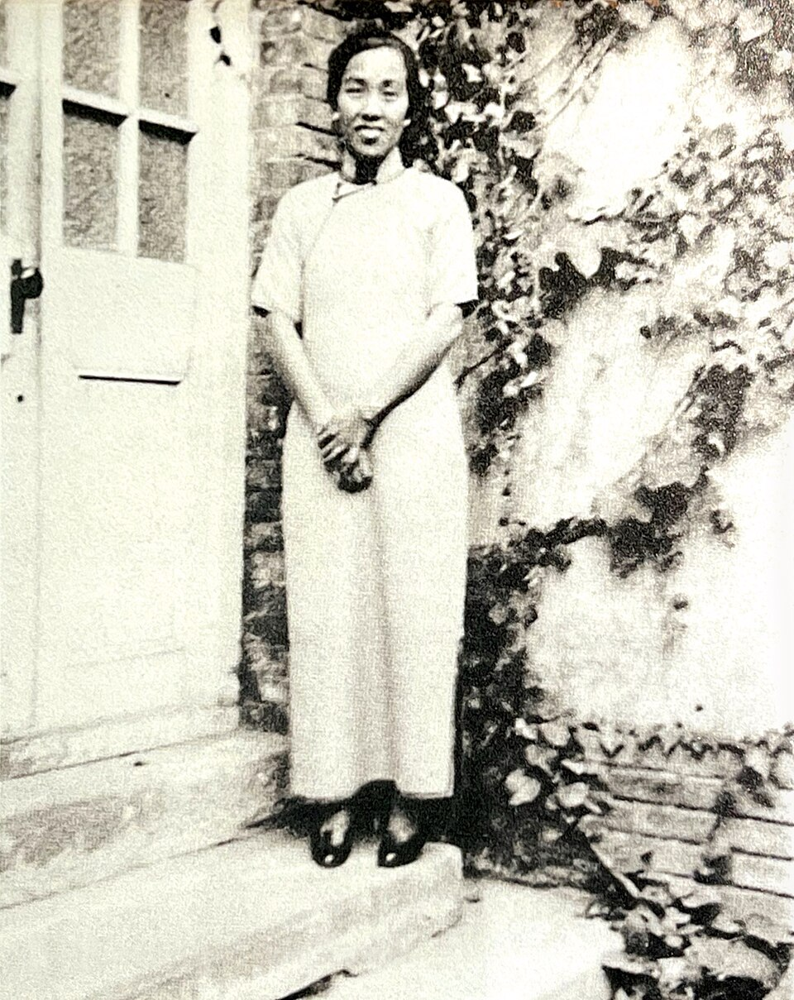
Public domain
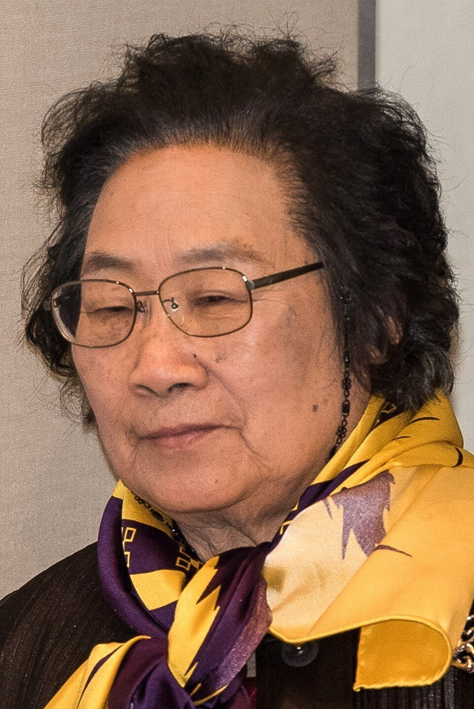
CC BY 2.0
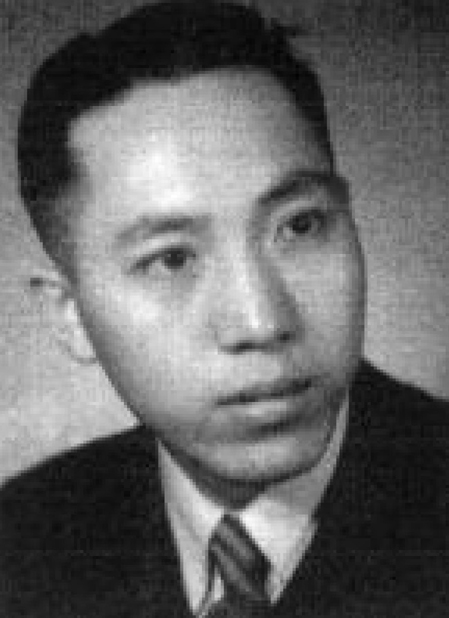
Public domain
完整清单
共 16 张图片 · 按文件名字母序
| 文件 | 内容 | 作者 | 许可 | 来源 |
|---|---|---|---|---|
| cs-hualuogeng.jpg | 华罗庚（1956） | 牛畏予 | Public domain | Commons ↗ |
| cs-wangxuan.jpg | 少年王选 | 佚名佚名 | Public domain | Commons ↗ |
| cs-yao.jpg | 姚期智（2016） | Sinednov | CC BY-SA 4.0 | Commons ↗ |
| eng-dengjiaxian.jpg | 邓稼先（1949） | 佚名佚名 | Public domain | Commons ↗ |
| eng-qiansanqiang.jpg | 年轻的钱三强 | 佚名佚名 | Public domain | Commons ↗ |
| eng-qianxuesen.jpg | 钱学森归国后 | 佚名佚名 | Public domain | Commons ↗ |
| hero-greatwall.jpg | 慕田峪长城 | Lloyd Tudor | CC BY-SA 4.0 | Commons ↗ |
| hero-hsr.jpg | 复兴号 CR400AF | N509FZ | CC BY-SA 4.0 | Commons ↗ |
| hero-rocket.jpg | 神舟十三号发射 | Created by ForrestXYC, photoshopped by Ib | CC BY-SA 4.0 | Commons ↗ |
| hero-tiananmen.jpg | 天安门夜景 | Charlie fong冯成 | Public domain | Commons ↗ |
| law-dongbiwu.jpg | 董必武 | 佚名佚名 | Public domain | Commons ↗ |
| law-shiliang.jpg | 史良 | 政協秘書處 | Public domain | Commons ↗ |
| law-xiejuezai.jpg | 谢觉哉 | 吴印咸，Wu Yinxian | Public domain | Commons ↗ |
| med-linqiaozhi.jpg | 林巧稚（1934） | 佚名佚名 | Public domain | Commons ↗ |
| med-tuyouyou.jpg | 屠呦呦（2015） | Bengt Nyman from Vaxholm, Sweden | CC BY 2.0 | Commons ↗ |
| med-wumengchao.jpg | 吴孟超 | 佚名佚名 | Public domain | Commons ↗ |